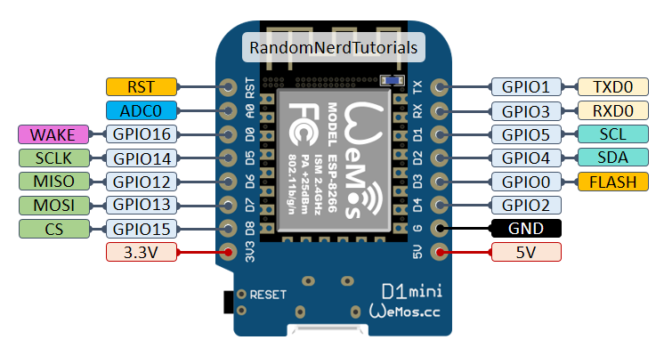

Input & Output
Het mooie aan microcontrollers is natuurlijk dat je er elektronische componenten mee kunt aansturen en uitlezen. In dit hoofdstuk zullen we beschrijven hoe je de input en output van de microcontroller kunt gebruiken.
Pinout
De ESP8266 die wij voor dit project gebruiken is gemonteerd op een WEMOS D1 mini development board. Daarop zijn een aantal pinnen beschikbaar zoals te zien in de onderstaande afbeelding. We zullen de functionaliteiten van elke pin hieronder uitleggen.

D0 tm D8De 9 digitale pinnen kunnen gebruikt worden als digitale input of output. OpD0na ondersteunen ze allemaal PWM.A0Is een analoge input pin.RX & TXKunnen gebruikt worden voor Seriële communicatie.GNDIs een ground pin.3V3Geeft een spanning van 3,3V waarop de ESP draait.5VGeeft een spanning van 5V direct vanaf de USB voeding.
Als je meer informatie wilt over de werking en mogelijkheden van elke pin kun je kijken in de pin reference.
Digitale Input
Om een digitale pin van de ESP als input te gebruiken zodat je er bijvoorbeeld een knopje op aan kunt sluiten zul je in de setup() van je programma moeten aangeven welke pin als output behandeld moet worden. Dit doe je met de pinMode(pinNumber, mode) functie waarbij je het pinnummer en de modus opgeeft.
1 | |
Vervolgens kun je de waarde van de input uitlezen met digitalRead(pinNumber). De ESP draait op 3.3 volt dus wanneer er een spanning van ongeveer 3.3 volt op de pin staat wordt er een True teruggegeven. Is het voltage rond de 0 volt (oftewel ground) dan wordt er een False terug gegeven.
1 | |
Digitale Output
Het is ook mogelijk een digitale pin als output te gebruiken. Daarvoor zet je in de setup() de pinMode van die pin op OUTPUT.
1 | |
Vervolgens kun je met digitalWrite(pinNumber, state) de output van de pin aanpassen. Met HIGH komt er 3.3 volt op de pin te staan en met LOW wordt de pin verbonden met ground.
1 | |
Analoge Input
De ESP heeft één analoge pin, A0, waarvan je de waarde uit kunt lezen met analogRead(pinNumber). Dit geeft een getal tussen de 0 en de 1023 terug waarbij 0 overeen komt met een verbinding met de ground en 1023 met 3.3 volt.
1 | |
PWM Output
Het is mogelijk om met een digitale pin een analoge output te simuleren. Dat doen we door de pin heel snel aan en uit te zetten, het zogenomede Pulse Width Modulation (PWM). Door de tijd dat de pin aan staat in een periode te varieren kunnen we het schijnbare voltage variëren. Dit noemen we de dutycycle aanpassen. PWM wordt vooral gebruikt om de helderheid van ledlampjes aan te passen. Onze ogen waanemen namelijk het gemiddelde van de helderheid. In de onderstaande afbeelding zie je een voorbeeld van hoe dit werkt.

Als je PWM op een digitale pin wilt gebruiken moet je hem eerst als output instellen in de setup().
1 | |
Vervolgens roep je de analogWrite(pinNumber, value) functie aan. De value mag een getal tussen de 0 en de 255 zijn. Het volgende voorbeeld geeft dus een PWM signaal op 50% via pin D1.
1 | |